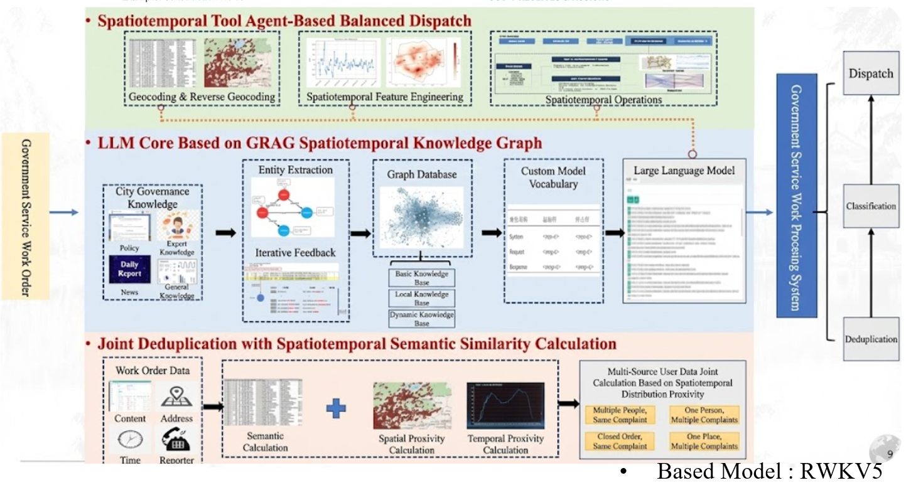

2024
Spatiotemporal Knowledge Graphs
Research Assistant · Peking University

Research motivation
How can geographic relationships connect heterogeneous urban information?
I worked on representing geographic relationships through semantic and graph-based methods. These projects motivated me to examine how locations, activities and contextual information can be connected, and how errors in classification and entity linking affect the resulting representation.
Work & methods
- Contributed to model fine-tuning for duplicate detection and classification of municipal service requests.
- Defined spatial and temporal attributes for a knowledge graph.
- Used large language models for structured information extraction and examined classification and entity-linking errors.
- Applied the approach to map and in-vehicle feedback on POI accuracy and navigation problems.